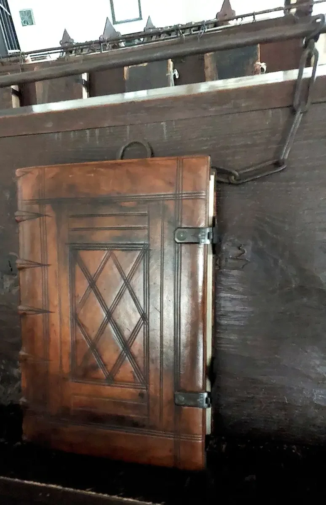
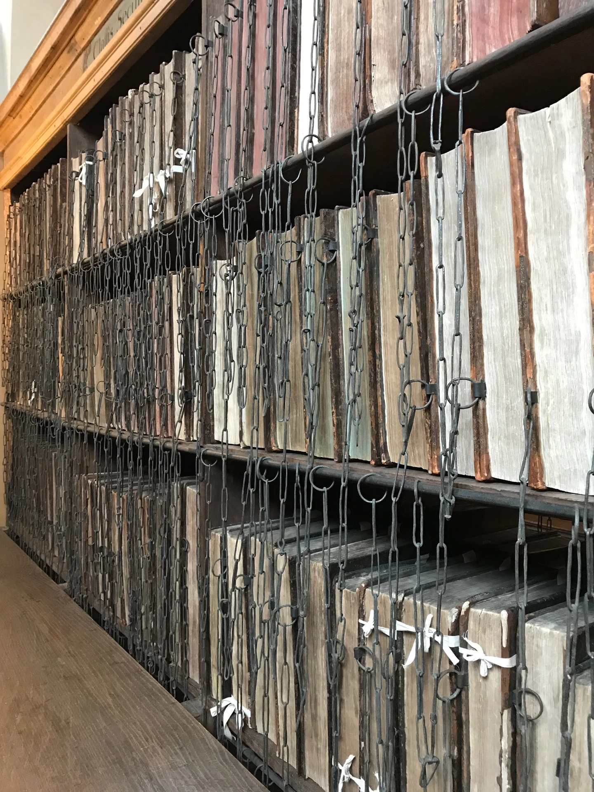
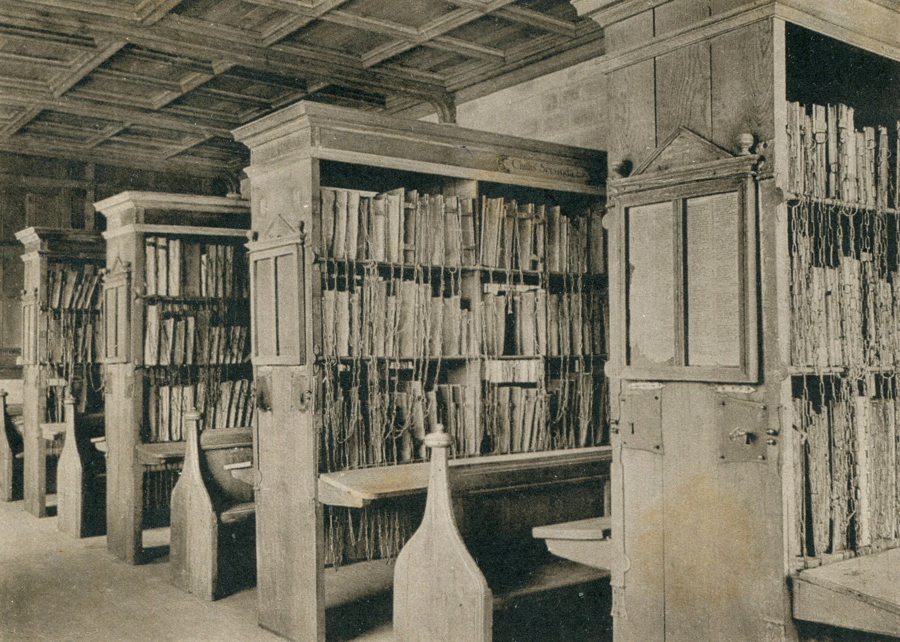
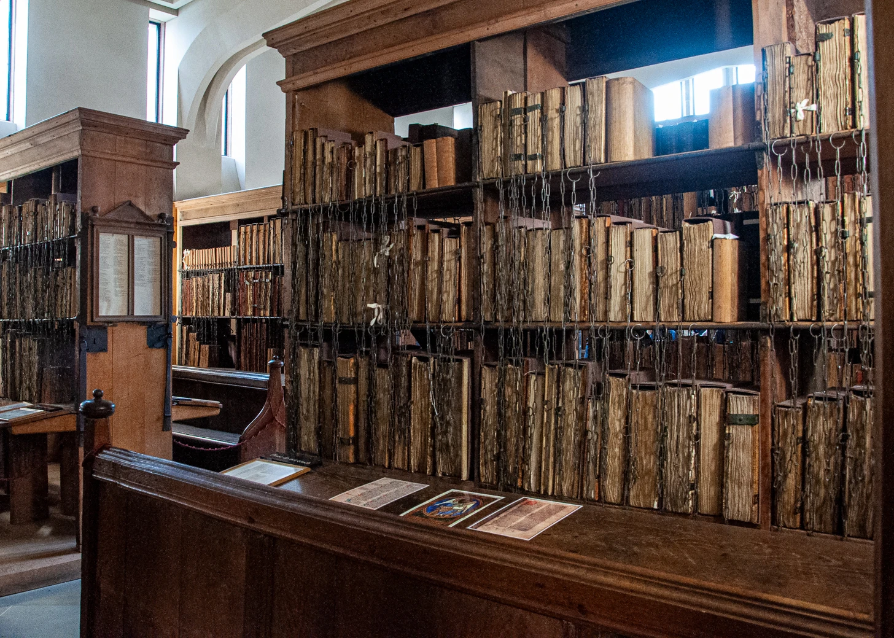
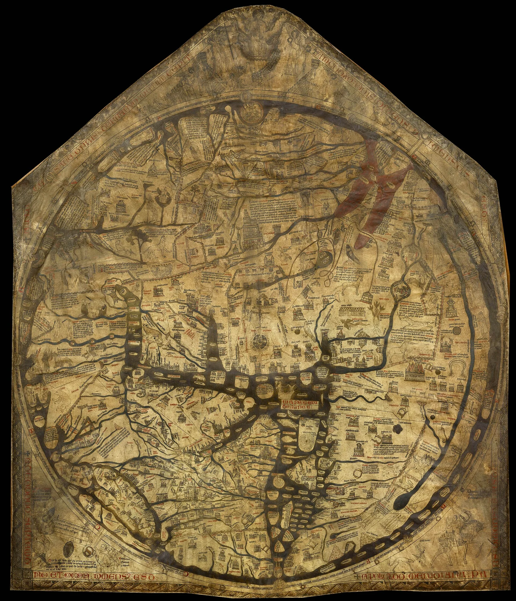
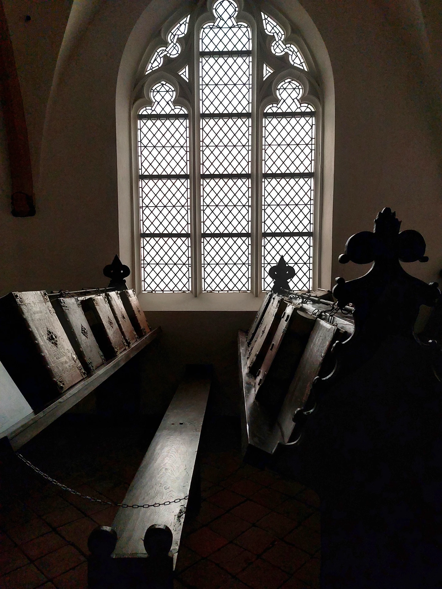

아직 펼치지 않은 카드책을 지키는 약속 · 2사슬에 묶인 책옛날 도서관에서는 귀한 책을 쇠사슬로 묶어 두었어요. 사슬을 달려면 책을 어떻게 꽂아야 했을까요?책을 쇠사슬로 묶어 놓은 도서관이 있대! 왜 그랬을까?
1611년영국 헤리퍼드 대성당 · 성모 경당
사슬에 묶인 책
1611년, 영국 헤리퍼드 대성당의 성모 경당에 새 책장이 들어섰어요. 책마다 사슬을 달아 책장에 걸었지요. 1901년의 기록대로, 책 한 권을 사슬에 거는 차례를 따라 책장을 꾸며 보세요.
옛날 영국의 큰 교회에서는 책을 쇠사슬로 책장에 묶어 두었대. 우리도 책 한 권을 사슬로 걸어 볼까?
검수 전 시안이에요(기준서 1판). 장면에는 헤리퍼드 대성당과 마파 문디 재단의 누리집, 그리고 1901년 J. W. 클라크가 헤리퍼드 책장을 살펴 적은 책에 있는 것만 옮겼어요. 책장 무대는 이 안내서가 그렸어요. 상상은 ‘눈 감고 상상해 보기’에만 썼어요.
시안 확인용카드 단계 미리 보기
1
책을 묶으라는 규칙
1583년, 엘리자베스 1세 여왕이 보낸 조사단이 영국 헤리퍼드(Hereford) 대성당을 살폈어요. 조사단은 대성당 도서관이 돌보는 사람 없이 허물어져 가고 있다고 보고했어요.
그러자 새 규칙이 생겼어요. 대성당 일을 맡은 성직자(참사회원) 한 사람을 ‘도서관 책임자’로 세우고, 책을 지키기 위해 사슬로 묶으라는 것이었어요.

1590년, 도서관은 종교개혁 뒤로 쓰지 않던 성모 경당으로 옮겨 갔어요. 1611년에는 도서관 책임자 토머스 손턴(Thomas Thornton)이 그곳에 사슬 도서관을 짓게 했어요.
얼마 전 옥스퍼드 대학에 들어선 도서관들을 본떴어요. 나무 책장은 헤리퍼드에서 짰지만, 쇠붙이는 옥스퍼드에서 주문해야 했어요.
옛날 영국 헤리퍼드의 큰 교회에서는, 책을 잘 지키려고 쇠사슬로 묶기로 했대.
물어보기귀한 책을 지키려면, 너라면 어떻게 할래?
2
책장에 사슬 걸기
1901년, 영국 케임브리지 대학의 J. W. 클라크(John Willis Clark)가 헤리퍼드의 책장을 꼼꼼히 살펴 그림과 함께 적었어요. 그는 책을 사슬로 묶는 방식을 보여 줄 본보기로 헤리퍼드만 한 곳을 알지 못한다고 했어요.
그 기록대로 책 한 권을 책장에 걸어 보세요. 아래에서 하나씩 골라 놓으면 돼요.
우리 집에도 늘 한자리에 두고 누구나 펼쳐 볼 책이 있다면, 어디에 둘까요?
책은 앞 책상까지 내려와 펼칠 수 있지만, 책장을 떠날 수는 없었어요. 클라크가 잰 사슬은 1m에서 1.3m쯤이었어요. 가운데에는 대개 빙글 도는 고리가 있었는데, 클라크는 사슬이 꼬이지 않게 하려는 것 같다고 보았어요.
책을 꽂고, 사슬을 달고, 쇠막대에 꿰고, 자물쇠를 채워 볼까? 마지막엔 책상에 펼쳐 읽어!
물어보기사슬에 묶인 책은 어디까지 데려갈 수 있을까?
3
흩어졌다 다시 모인 책장
1841년, 성모 경당을 고치는 공사 때문에 사슬 도서관을 뜯어냈어요. 책에서는 사슬을 떼어 냈고, 책상과 의자는 대성당 여기저기에서 다른 데 쓰였어요.
1897년에는 대성당 회랑에 2층 건물을 새로 이어 짓고, 사슬 없는 도서관을 그 위층에 들였어요.


위 엽서에는 찍은 해가 적혀 있지 않아요. 다만 책마다 사슬이 달려 있으니, 1930년 무렵 사슬을 다시 단 뒤의 모습일 거예요.
그때 스트리터(B. H. Streeter) 참사회원이 성모 경당 때의 모습대로 책장을 되살리고 책에 사슬을 다시 달았어요. 하지만 책장은 문서 보관실과 위층 도서관, 두 곳에 나뉘어 있었어요.
1996년 새 도서관 건물이 문을 열자, 사슬 도서관은 다시 한곳에 모였어요. 1611년부터 1841년까지 성모 경당에 있던 그대로 놓였어요.
사슬을 뗐다가, 다시 달았다가, 두 곳에 나뉘었다가… 이제는 한곳에 모였대!
물어보기옛 엽서랑 오늘 사진에서 똑같은 걸 하나 찾아볼까?
4
팔지 않은 책들
1980년대 끝 무렵, 대성당은 해마다 모자라는 살림으로 큰 어려움을 겪었어요. 적어도 600만 파운드의 기금이 있어야 한다는 조언을 듣고, 가진 것을 팔기로 했어요.
대성당은 사슬 도서관의 귀한 책 여러 권을 골라 파는 대신, 1300년 무렵 송아지 가죽 한 장에 그린 세계 지도 「마파 문디(Mappa Mundi)」를 팔려고 했어요. 귀한 책을 골라 팔면 사슬 도서관이 온전하지 못하게 되기 때문이었어요.

곧바로 대성당과 나라가 귀한 유산을 잃을까 걱정하는 목소리가 일었어요. 국가 유산 기념 기금(National Heritage Memorial Fund)과 존 폴 게티 2세(John Paul Getty Jr.), 그리고 세계 곳곳의 사람들이 힘을 보태 새 재단의 기금을 마련했어요.
지도와 사슬 도서관의 옛 책들은 재단이 맡았어요. 둘을 함께 들일 돌 건물을 새로 지었고, 1996년 5월 엘리자베스 2세 여왕이 문을 열었어요. 지도도, 책도 헤리퍼드에 남았어요.
돈이 모자라서 귀한 지도를 팔 뻔했대. 책들을 흩어지지 않게 하려고! 그런데 많은 사람이 도와서 지도도 책도 지켰어.
물어보기많은 사람이 조금씩 도와서 지켰대. 우리가 함께 지키는 건 뭐가 있을까?
눈 감고 상상해 보기
돌벽에 기댄 나무 책장 앞, 긴 의자에 앉아요. 책을 당기자 사슬이 차르륵 따라 내려와요. 높은 창으로 든 빛이 펼친 책 위에 떨어지고, 몸을 움직일 때마다 사슬이 낮게 쩔렁여요. 이 책은 내일도 이 자리에 있을 거예요.
눈을 감아 봐. 책을 당기면 사슬이 차르륵 따라와. 창으로 햇빛이 들어오고, 쩔렁쩔렁 소리가 나. 이 책은 내일도 여기 있을 거야.
나의 자리
지금 내가 너무 쉽게 가진 것 가운데, 옛날엔 사슬로 묶을 만큼 귀했던 것은 무엇일까요?
네가 제일 아끼는 물건은 어떻게 지켜?
마음에 닿는 한 줄을 고르거나 직접 써 보세요. 한 줄을 남기면 이 자리의 도장이 찍혀요. 이 기기에만 저장돼요.
더 깊이
궁금한 칸만 펼쳐 읽어도 괜찮아요.
알고 보면
성모 경당 성모 마리아에게 바친 예배당이에요. 종교개혁 뒤로 쓰이지 않다가, 1590년부터 1841년까지 대성당 도서관 자리가 되었어요.
옥스퍼드에서 온 쇠붙이 앞 카드의 보들리안 도서관도 1600년 무렵 방에 쇠창살과 사슬 같은 쇠붙이를 달았어요. 헤리퍼드는 이런 옥스퍼드 도서관들을 본떠, 쇠붙이까지 옥스퍼드에서 들여왔어요.
하나의 자물쇠 클라크가 본 헤리퍼드 책장은 책이 꽂힌 선반 세 칸의 쇠막대를 자물쇠 하나로 함께 잠갔어요.
가장 오래된 책 사슬 도서관에는 책이 1,500권쯤 있어요. 그 가운데 중세 손글씨 책들이 책장 두 칸을 차지하고, 가장 오래된 것은 8세기에 쓴 「헤리퍼드 복음서」예요.
사슬이 사라진 때 사슬 도서관은 생각보다 오래 이어졌어요. 1932년의 한 서평은 옥스퍼드의 모들린 칼리지가 1799년에야 책 사슬을 없앴다고 적었어요.
책을 눕혀 둔 사슬 도서관

네덜란드 쥐트펀의 성 발푸르가 교회 도서관은 1561년에 짓기 시작해 1563년에 마쳤어요. 이곳에서는 책을 선반에 세우지 않고, 교회 독서대 위의 성경처럼 비스듬한 책상에 눕혀 짧은 사슬로 매었어요.
클라크는 쥐트펀 같은 모양을 ‘독서대 방식’이라고 불렀어요. 책이 쌓이자 독서대는 자리를 너무 차지했고, 그래서 책상 위에 선반을 올린 헤리퍼드 같은 책장이 생겼다고 설명했어요.
기록마다 다른 점
책장을 만든 때 1901년 클라크는 헤리퍼드 책장이 대부분 1394년에 들인 것이라고 보았어요. 1932년 『스펙테이터』의 서평은 클라크가 두 세기나 이르게 잡았다며 1590년의 것이라고 했어요. 지금 대성당과 마파 문디 재단은 1611년에 토머스 손턴이 짓게 했다고 적어요.
새 건물을 연 날 마파 문디 누리집의 사슬 도서관 쪽 글은 1996년 5월 3일, 재단 쪽 글은 5월 5일이라고 적어요. 그래서 이 카드는 ‘1996년 5월’이라고만 썼어요.
중세 손글씨 책의 수 마파 문디 누리집은 227권, 헤리퍼드 대성당 누리집은 229권이라고 적어요.
직접 가 보기
확인한 날 · 2026년 11월 18일 · 바뀌기 쉬운 정보라 정기적으로 다시 확인해요
헤리퍼드 대성당 곁 ‘마파 문디와 사슬 도서관’ 전시관에서 사슬 책장과 지도를 함께 볼 수 있어요. 전시관은 입장료가 있어요.
2026년 9월 14일부터 월~토요일 오전 10시~오후 4시 30분에 열어요. 일요일, 성금요일, 12월 24~26일, 1월 1일에는 닫고, 해마다 1월에는 청소와 보존 작업으로 닫는 때가 있어요. 가기 전에 누리집에서 다시 확인하세요.
사슬 거는 차례 금박
책, 사슬, 쇠막대, 자물쇠, 책상 차례로 놓아 책 한 권을 책장에 걸면 카드에 금박이 입혀져요.
책 → 사슬 → 쇠막대 → 자물쇠 → 책상 차례로 놓기
우리 집 한자리 책 채색
둘 가운데 하나만 해도 카드가 채색돼요.
누구나 펼쳐 볼 책을 우리 집 어디에 둘지 고르기
아이와 함께 ‘영화처럼 보기’를 끝까지 보기
근거 보기 (10)
- 마파 문디·사슬 도서관 공식 누리집: 사슬 도서관 — 1583년 조사단과 새 규칙, 1590년 성모 경당, 1611년 손턴·옥스퍼드를 본뜸·쇠붙이 주문, 1841년 해체, 1897년 회랑 건물, 1930년 무렵 스트리터·두 곳, 1996년 5월 3일, 책 1,500권쯤·중세 손글씨 책 227권
- 마파 문디 재단: 재단과 소장품의 역사 — 1980년대 말 적자와 600만 파운드, 사슬 도서관 대신 지도를 팔기로, 국가 유산 기념 기금·존 폴 게티 2세, 지도와 사본을 재단이 맡음, 새 돌 건물, 1996년 5월 5일 개관
- 마파 문디 재단 첫 화면 — 1988년 재단, 세계 곳곳 사람들의 도움
- 헤리퍼드 대성당: 사슬 도서관 — 앞표지에 단 사슬과 선반 아래 쇠막대, 책상에서 읽되 책장을 떠나지 못함, 종이 끝이 밖을 봄, 중세 손글씨 책 229권·두 칸, 1611~1841년의 모습
- J. W. Clark, 『The Care of Books』(Cambridge, 1901, Project Gutenberg) — 놋쇠 띠와 쇠고리, 조금 더 큰 고리와 쇠막대, 쇠판·걸쇠·자물쇠, 사슬 길이(3피트 4인치~4피트 3인치)와 돌림고리, 헤리퍼드보다 나은 본보기를 모름, 1394년 추정, 쥐트펀(1561~1563)과 독서대 방식
- The Spectator, 1932년 7월 16일 「Books in Chains」(스트리터의 책 서평) — 클라크가 두 세기 이르게 잡음·1590년, 모들린 칼리지 1799년
- Guinness World Records: 가장 큰 중세 세계 지도 — 1300년 무렵, 송아지 가죽 한 장, 1.58×1.33m
- Victoria County History, Oxford 3권 「The Bodleian Library」 — 1600년 보들리 도서관의 쇠창살·사슬 같은 쇠붙이
- 마파 문디와 사슬 도서관: 방문 안내 — 2026년 9월 14일부터 여는 때, 닫는 날, 입장료 · 2026-11-18 확인
- 위키미디어 공용: 옛 그림엽서(Waterlow & Sons 인쇄) 정보
그림·사진·소리 출처
- 사진: John Lord · CC BY 2.0 · 위키미디어 공용
- 사진: Philip Halling · CC BY-SA 2.0 · 위키미디어 공용(geograph.org.uk)
- 엽서: Waterlow & Sons 인쇄 · 퍼블릭 도메인 · 위키미디어 공용
- 사진: Stuart Wilding · CC BY-SA 2.0 · 위키미디어 공용(geograph.org.uk)
- 지도: 만든 이 모름 · 퍼블릭 도메인 · 위키미디어 공용
- 사진: Mx Lucy · CC BY-SA 4.0 · 위키미디어 공용
- 사진: Mx Lucy · CC BY-SA 4.0 · 위키미디어 공용(네덜란드 쥐트펀 성 발푸르가 교회)
- 책장 무대: 이 안내서가 그린 그림 · J. W. 클라크 『The Care of Books』(1901)의 헤리퍼드 기록과 헤리퍼드 대성당 누리집 설명을 바탕으로
‘처음 만나는 기독교 문화’의 깊은 카드예요. 실제 인물의 사진은 쓰지 않았어요. 카드 단계와 남긴 글은 이 기기에만 저장돼요.